Víctor Cisternas
Animación digital y personajes para videojuegos. Apunto a ser Technical Animator.
Sobre mí
Hola, soy Víctor Cisternas, estudiante de Animación Digital con especial interés en la creación e implementación de personajes para videojuegos.
Mi objetivo profesional es desarrollarme como Technical Animator, actuando como un puente entre la animación y la programación. Por eso me enfoco en el flujo completo de desarrollo de personajes 3D: modelado, rigging, animación e implementación dentro de motores de videojuegos.
Tengo experiencia en proyectos universitarios y externos, donde he fortalecido mis habilidades en distintas áreas de la producción.
Software
- Maya 3D
- Blender
- Arnold
- Unity
- After Effects
- Duik
Experiencia
Modelador de props y personajes
Alikan Games Studio
Modelado de props y personajes para videojuegos.
Animador freelance de motion graphics
NW Sports
Animación de motion graphics como freelance.
Profesor universitario asistente
Universidad San Sebastián
Ayudante de la asignatura Iluminación y rendering.
Animador 2D cut out
Bitplay – Creatividad Digital
Animación de personajes para escenas de un corto animado realizado para un evento del Día del Patrimonio 2025, desarrollado por la Municipalidad de Quinta Normal.
Animador 2D cut out
Protege tu huella
Spot publicitario animado: animación 2D de personajes e ilustración de fondos.
Profesor universitario asistente
Universidad San Sebastián
Ayudante de la asignatura Fabricación digital, Prototipado y Validación.
Profesor universitario asistente
Universidad San Sebastián
Ayudante de la asignatura Procesos creativos, Inteligencia artificial y Ciencias de datos II.
Profesor universitario asistente
Universidad San Sebastián
Ayudante de la asignatura Introducción al modelado y animación 3D.
Animador 2D
NOTBUG STUDIOS
Colaboración en un proyecto de videojuego, desarrollando animaciones 2D, VFX e ilustraciones.
Animación digital, Mención en Videojuegos · Universidad San Sebastián (2023 – 2027)
Animación 3D
Reel de animación 3D
Animación 3D en Maya con flujo de referencias, blocking, splining y polish. Los rigs y modelos no son de mi autoría: fueron extraídos de agora.community.
Irene: modelado y rigging en Blender
Rol: modelador y rigger del personaje.
Irene: rig y modelo
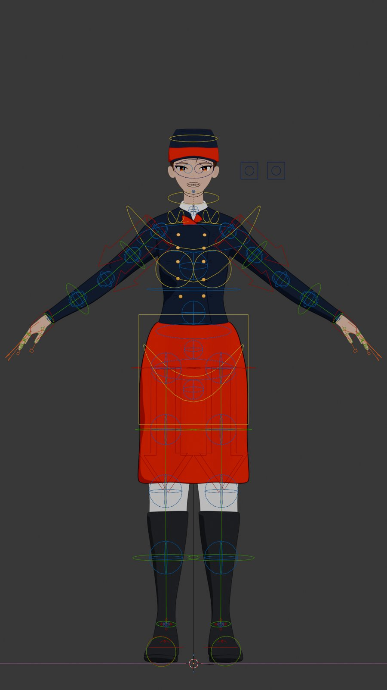
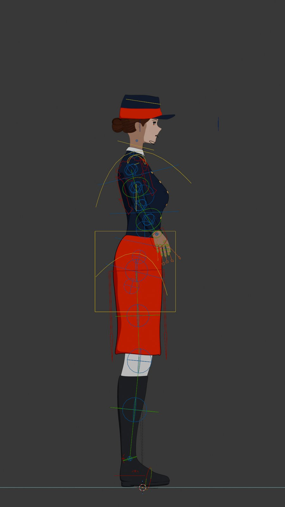
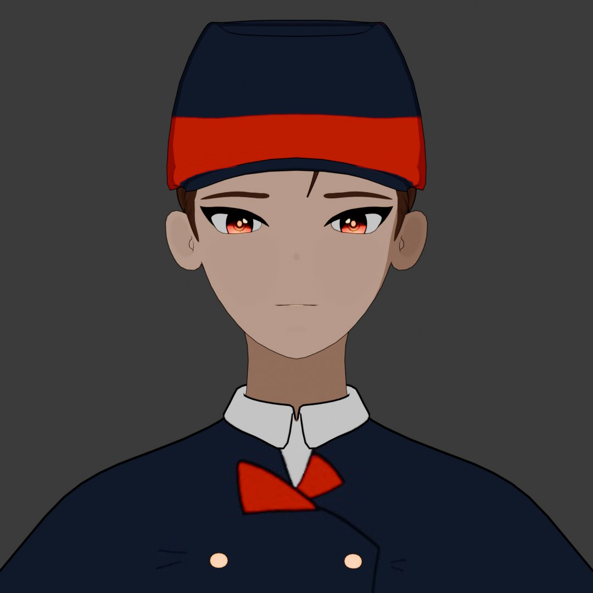
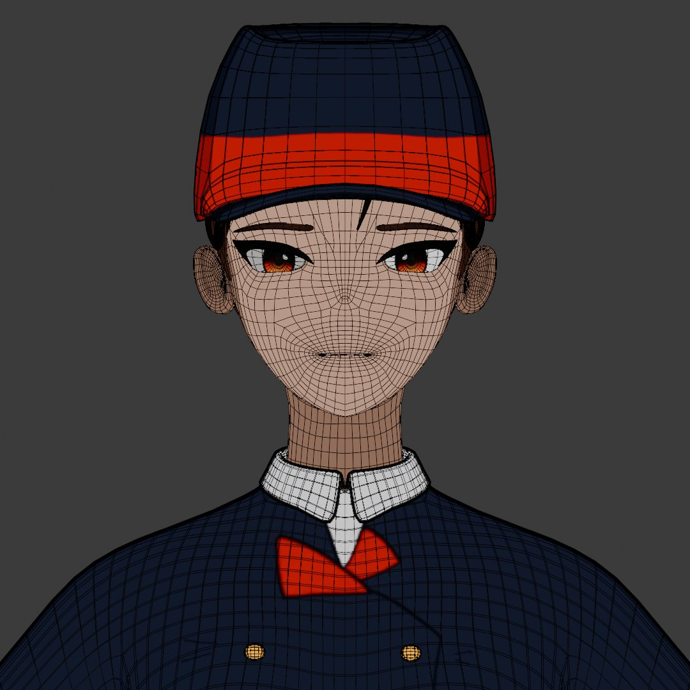
Videojuegos
The Horn · Gameplay
Videojuego desarrollado en equipo. Mi rol fue la programación y la integración de animaciones y assets en Unity, es decir, trabajo de animador técnico. Está basado en la leyenda del Camahueto, criatura mitológica de Chiloé. Es un juego tipo Souls, por lo que integré mecánicas de interacción y de combate con NPCs y enemigos.
The Horn · Pruebas en Unity
Procesos dentro de Unity para generar interacciones.
Animación 2D
Caminata por Chiloé
Rol: animador del personaje principal y diseñador de fondos.
Rigging 2D: Chinita (Duik, After Effects)
Rol: rigger del personaje.
Reel Protege tu huella
Rol: animador y diseñador de fondos.
Lyrics: Enemy
Rol: animador y compositor.
Proyecto personal: Bull
Un personaje propio, trabajado desde el concept art hasta el sculpt y la retopología. El rig y la animación siguen en desarrollo.
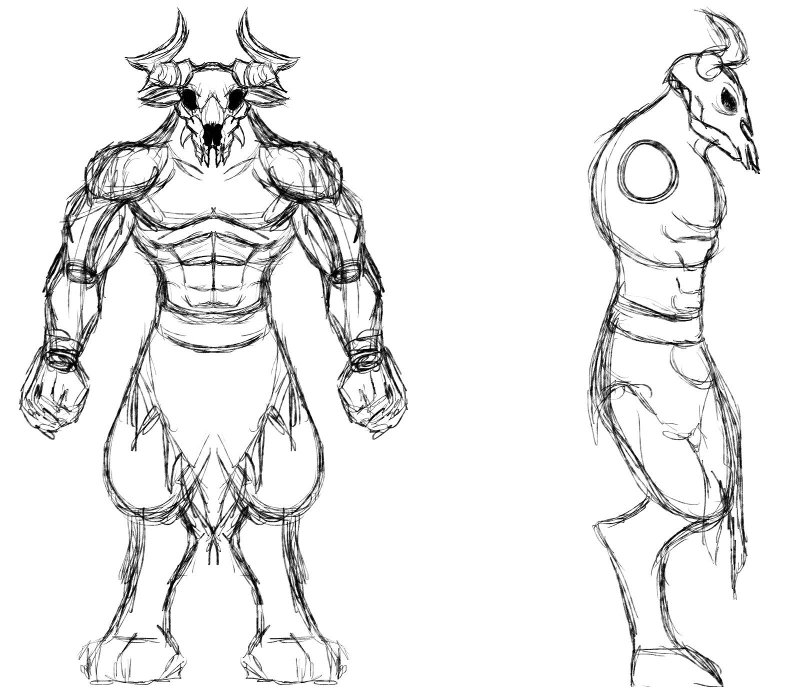
Concept art
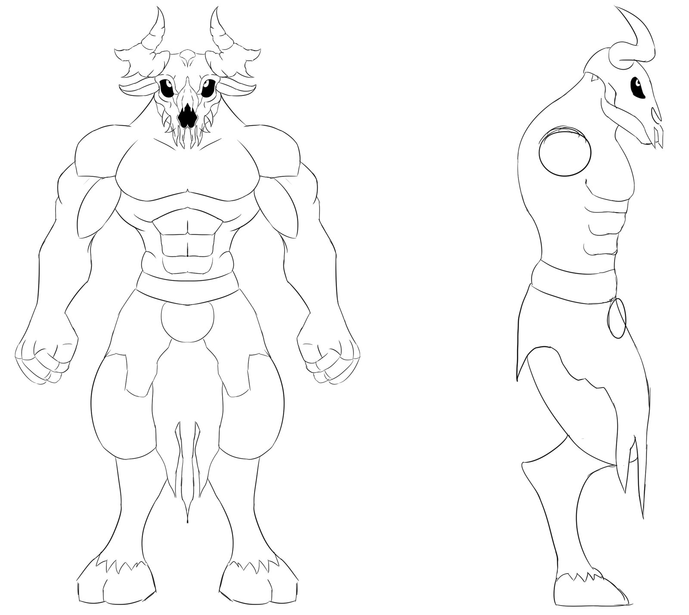
Model sheet
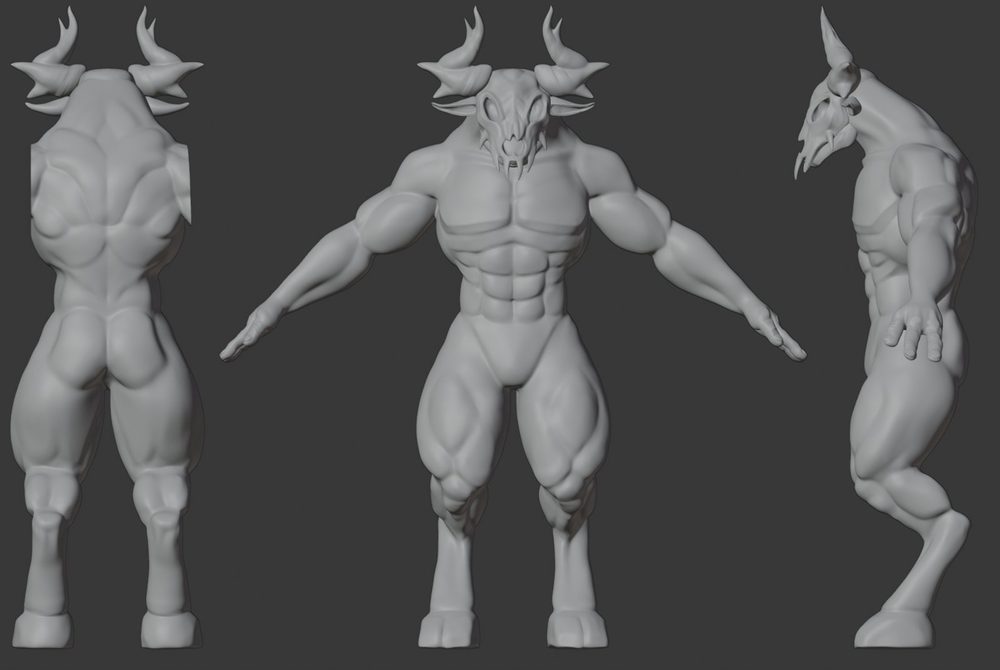
Sculpt
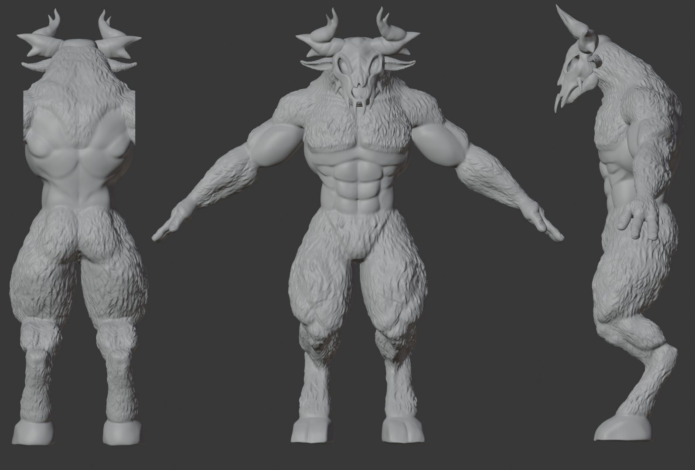
Sculpt: detalle y pelaje
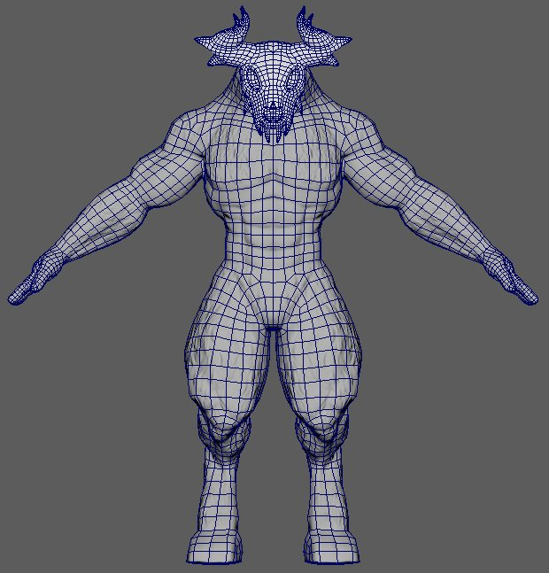
Retopología: frente
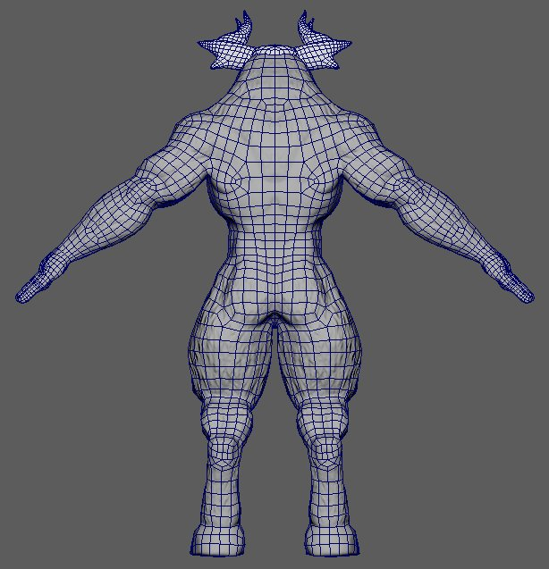
Retopología: espalda
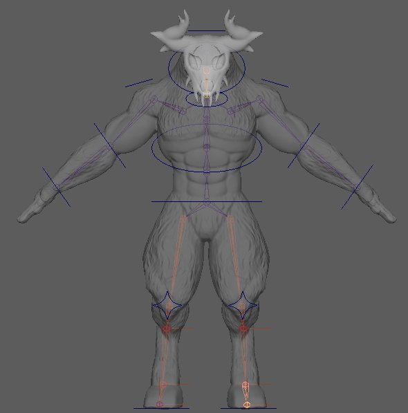